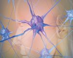

Proteomic changes in Alzheimer disease
associated with progressive Aβ plaque and
tau tangle pathologies
Proteomics can shed light on the dynamic and multifaceted alterations
in neurodegenerative disorders like Alzheimer disease (AD). Combining
radioligands measuring β-amyloid (Aβ) plaques and tau tangles with
cerebrospinal fuid proteomics, we uncover molecular events mirroring
diferent stages of AD pathology in living humans. We found 127 diferentially
abundant proteins (DAPs) across the AD spectrum. The strongest Aβ-related
proteins were mainly expressed in glial cells and included SMOC1 and ITGAM.
A dozen proteins linked to ATP metabolism and preferentially expressed
in neurons were independently associated with tau tangle load and tau
accumulation. Only 20% of the DAPs were also altered in other neurodege�nerative diseases, underscoring AD’s distinct proteome. Two co-expression
modules related, respectively, to protein metabolism and microglial immune
response encompassed most DAPs, with opposing, staggered trajectories
along the AD continuum. We unveil protein signatures associated with Aβ and
tau proteinopathy in vivo, ofering insights into complex neural responses
and potential biomarkers and therapeutics targeting diferent disease stages.